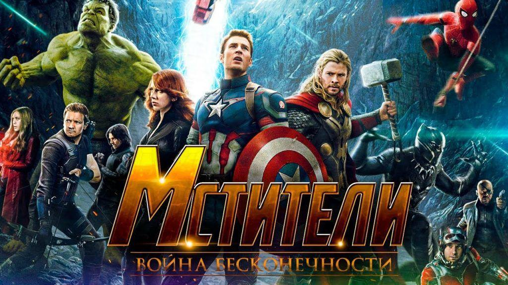

Завладев Камнем Силы с планеты Ксандар, Танос вместе с Чёрным Орденомнападает на космический корабль, в котором находятся Тор, его брат Локи, Халк, Хеймдалл и жители Асгарда, оставшиеся в живых после Рагнарёка. Корабль подаёт сигнал бедствия. Титан пытает Тора и угрожает убить его, если Локи не отдаст ему Тессеракт, в котором находится Камень Пространства. Локи отдаёт Таносу камень, однако внезапно на титана нападает Халк. Не ожидав такого, титан сначала пропускает несколько ударов от Халка, но потом собравшись, без труда побеждает его. Хеймдалл из последних сил через Биврёст отправляет Халка на Землю предупредить об угрозе, после чего погибает от рук титана. Танос посылает Чёрный Орден — Кулла Обсидиана, Эбенового Зоба, Корвуса Глэйва и Проксиму Миднайт найти два других камня, которые находятся на Земле. Локи пытается обмануть Таноса и убить того спрятанным кинжалом, но Танос раскрывает обман и убивает его на глазах у Тора, сказав, что на сей раз не воскреснет, после чего уничтожает корабль.
Халк приземляется в храме «Санктум Санкторум» в Нью-Йорке и превращается в Брюса Бэннера, произнеся фразу: «Танос идёт! Спасайтесь!». Этим он предупреждает Доктора Стрэнджа и Вонгао том, что Танос направляется на Землю. Тони Старк прогуливается в парке со своей возлюбленной Пеппер Поттс и намекает ей, что хочет завести ребёнка. В этот момент к ним телепортируется Стрэндж и Бэннер и просят о помощи. Вонг рассказывает Тони о Камнях Бесконечности — кристаллах, которые обладают неограниченной силой и которыми хочет завладеть титан. Камнями Силы и Пространства Танос уже завладел, Камень Разума расположен во лбу Вижена, Камень Реальности у Коллекционера на Забвении, Камень Времени находится у Стрэнджа в Глазу Агамотто, а о Камне Души ничего не известно.
Чтобы противостоять угрозе, Брюс предлагает Старку позвать на помощь Стива Роджерса. Тони говорит, что они со Стивом сейчас в конфликте, но Брюс уговаривает его позвонить. Звонок прерывает начавшаяся паника в городе. В Нью-Йорк прилетают Эбеновый Зоб и Кулл Обсидиан, где, пытаясь отнять Камень, вступают в бой со Старком, который создал свой совершенно новый костюм модели Mark 50, способный собираться из нано-частиц, Стрэнджем, Вонгом и Питером Паркером, который ехал на экскурсию с классом и увидев корабль, попросил своего друга Нэда отвлечь всех, а сам незаметно сбежал через окно. Зоб, владеющий телекинетическими способностями, пытается забрать Камень Времени у Стрэнджа, однако ему это не удаётся. Тогда он забирает Стрэнджа с собой на корабль, следом за ним на корабль попадают Железный человек и Человек-паук, получивший от Старка новый костюм Железного паука. На корабле Зоб пытает Стрэнджа, чтобы тот снял защиту с Камня. Питеру вместе с Тони удаётся пробить дыру в корабле, из-за чего Зоба выбрасывает в открытый космос, где он погибает. Брюс связывается со Стивом Роджерсом, который знает местонахождение Вижена, а Вонг остаётся охранять «Санктум Санкторум».
Вижен со своей возлюбленной, Вандой Максимофф, находится в Шотландии. Во время вечерней прогулки на них нападают Корвус и Проксима и пытаются вытащить из головы Вижена Камень Разума, в результате чего серьёзно ранят андроида. Однако прибывшие на помощь Стив Роджерс, Сэм Уилсон и Наташа Романоффотбивают нападение, после чего они направляются к Джеймсу Роудсу на базу Мстителей. Вижен предлагает уничтожить Камень, тем самым нарушив план Таноса, однако это приведёт к его гибели, поэтому команда отказывается и решает найти другой способ. Брюс делает вывод о том, что есть способ изъять Камень, при котором андроид выживет, после чего Стив решает прибегнуть к высокоразвитым технологиям Ваканды.
А тем временем Стражи Галактикиполучают сигнал бедствия, после чего находят обломки корабля асгардцев, разрушенного Таносом, а также спасают Тора, случайно налетевшего на окно корабля. Гамора рассказывает ему, что её отец с помощью Камней собирается уничтожить половину жителей Вселенной, чтобы защитить её от перенаселения и сохранить равновесие. Если Танос вставит все шесть Камней в свою Перчатку Бесконечности, то осуществит свой план всего лишь одним
щелчком пальцев. Тор предполагает, что теперь цель Таноса — Камень Реальности, который находится у Коллекционера на Забвении. Так как Тору нужно новое оружие для борьбы с титаном вместо утраченного молота, он вместе с Ракетой и Грутом на челноке летит на Нидавеллир. В свою очередь Питер Квилл, Гамора, Дракс и Мантисотправляются на Забвение и обнаруживают, что Танос уже забрал у Коллекционера Камень Реальности. Он похищает Гамору, которая раскрывает ему местонахождение Камня Души, чтобы избавить свою сводную сестру Небулу от пыток. Они отправляются на планету Вормир, где Танос узнаёт от находящегося там Красного Черепа, что должен принести в жертву любимого человека, чтобы добраться до Камня Души. Со слезами на глазах он сталкивает Гамору со скалы, где она погибает и таким образом Танос получает Камень.
Небула убегает из плена и по связи просит оставшихся Стражей встретить её на Титане, родине Таноса. Корабль Зоба вместе с Тони, Питером и Стрэнджем на борту прибывает туда же. Приземлившись на Титане, они подвергаются нападению Звёздного Лорда, Дракса и Мантис, принявших их за прислужников Таноса, но потом герои, осознав ошибку, решают вместе противостоять титану. Стрэндж, используя Камень Времени, видит 14 000 625 вариантов битвы, из которых титан проигрывает только в одном. Когда Танос прибывает на Титан, он объясняет Стрэнджу свои планы желанием обеспечить выживание Вселенной, которой угрожает гибель из-за перенаселения и истощения ресурсов. Начинается битва и героям совместными усилиями удаётся обездвижить Таноса. У них почти получается снять Перчатку, однако когда становится известно, что Танос убил Гамору, Питер Квилл, узнав о смерти любимой, в гневе начинает бить титана, и он просыпается. Танос легко побеждает каждого из них, а после серьёзно ранит Тони Старка, при этом в битве сильно повредив его костюм. Угрожая его убить, он вынуждает Стрэнджа отдать ему Камень Времени, тем самым сохранив жизнь Старку. После того, как Танос телепортируется, Питер Квилл пытается его убить, но не успевает. Тони спрашивает Стрэнджа, зачем он отдал Таносу Камень, на что доктор отвечает: «Пошёл финальный раунд».
Тем временем Тор с Ракетой и Грутом добрался до Нидавеллира, но звезда, необходимая для изготовления оружия, погасла. Гном Эйтри рассказывает, как однажды Танос атаковал кузницу и заставил выковать ему Перчатку Бесконечности. Когда Эйтри выполнил поручение Таноса, титан убил всех гномов, а ему самому отрубил обе кисти рук. Тор с помощью Ракеты собственноручно запускает плавильную печь, однако энергия звезды почти убивает его. Эйтри делает для Тора новое оружие — топор Громсекира, а Грут отдаёт в жертву свою левую руку для рукояти.
По прибытии в Ваканду Стив встречается с Баки Барнсом, который получил новый протез от короля Т’Чаллы и новое прозвище — Белый Волк. Сестра Т’Чаллы, Шури начинает отделять Камень от головы Вижена, чтобы Ванда смогла его уничтожить. Вторгается армия Таноса, и Мстители сражаются с ней вместе с силами Ваканды, а Стив в свою очередь получает от Т’Чаллы новые щиты и тоже вступает в бой. Брюс, неспособный превратиться в Халка после схватки с Таносом, сражается в ещё одной новой броне Старка — «Халкбастере 2.0» (модели Mark 49). Тор, Ракета и Грут с помощью Громсекиры, способной открывать Биврёст, прибывают на Землю и помогают защитникам. Брюс с помощью «Халкбастера» убивает Кулла, Ванда вместе с Наташей и Окойе убивают Проксиму, а Стив и Вижен — Корвуса. Прибывает Танос, и Вижен напоминает Ванде об обещании уничтожить Камень в его голове, чтобы он не попал в руки титана. Мстители вместе с Т’Чаллой, Окойе и Баки пытаются остановить Таноса, но безуспешно. С горькими слезами на глазах Ванда успешно справляется с задачей, но Танос после короткого разговора с Вандой с помощью Камня Времени поворачивает время вспять, восстанавливает Вижена, после чего вырывает Камень Разума из его головы, тем самым убивая его. После того, как титан помещает последний Камень в Перчатку, на него нападает Тор и бросив в него Громсекиру, ранит в грудь. Но Танос, сказав, что надо было бить по голове, делает щелчок пальцами. На врем
я титан попадает в Камень Души, где видит маленькую Гамору. Она спрашивает его, какой ценой обошлось ему собрать все Камни, на что Танос отвечает: «Ценой всего». Когда Танос возвращается в реальность, но уже со сгоревшей Перчаткой, Тор с ужасом спрашивает что тот сделал, но Танос лишь улыбнулся и телепортировался в неизвестном направлении. Вскоре Баки превращается в пыль и исчезает. То же самое последовательно происходит с половиной армии Ваканды, Т’Чаллой, Грутом, Вандой и Соколом. В это же время на Титане также превращаются в пыль Мантис, Дракс, Питер Квилл и Доктор Стрэндж, успевший сказать Старку, что по другому не могло быть. Питер Паркер также начинает рассыпаться, и Тони пытается его успокоить, но и Питер в итоге исчезает. В живых на планете остаются только Старк и Небула, которая сказала, что Танос всё-таки осуществил свой план и стёр половину населения Вселенной.
В Ваканде Стив Роджерс, оставшиеся в живых Мстители (Тор, Брюс Бэннер, Чёрная вдова, Воитель и Ракета) и воины Ваканды (в числе которых Окойе и М’Баку) в ужасе осознают, что натворил титан. В конце Танос с умиротворением наблюдает за восходом солнца на неизвестной планете, как и хотел. Ведь он в итоге смог осуществить задуманное, собрав все Камни Бесконечности.
В сцене после титров Ник Фьюри и Мария Хилл становятся свидетелями хаоса на улицах Нью-Йорка из-за исчезновения половины землян. На глазах у Фьюри Мария рассыпается в пыль. Ник также начинает рассыпаться, однако он успевает включить секретный пейджер. В последних кадрах виден экран устройства, на котором идёт процесс передачи какого-то сообщения, а затем на весь экран разворачивается эмблема Капитана Марвел.
